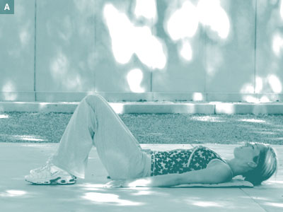

ExercisesExercises designed to help you... NeckExercises ShoulderExercises Low BackExercises KneeExercises |
Low back Exercises9. BridgeUsing the co-contraction technique, (see Low back, 6. Co-contraction exercise) the following exercise will give you more dynamic stability.
Repeat 10 times All exercises and advice found on this web site are to be carried out only under the instruction of you chiropractor. < Back to Low back Exercises List DownloadYou can download this exercise in Adobe PDF format for your own personal use. Get the free Adobe PDF reader. |
 |